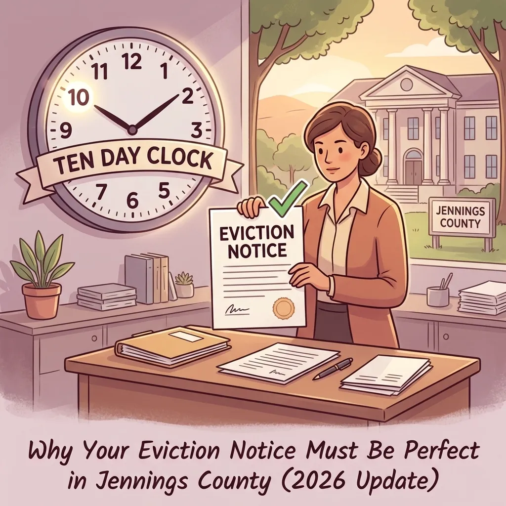

The 10-Day Clock: Why Your Eviction Notice Must Be Perfect in Jennings County (2026 Update)

If you own rental property in North Vernon, Vernon, or anywhere else in Jennings County, you know that being a landlord is more than just collecting a check on the first of the month. It's about managing relationships, maintaining property, and: occasionally: dealing with the tough reality of a tenant who stops paying rent.
When rent stops coming in, your first instinct might be to head straight to the courthouse in Vernon to file for eviction. But in 2026, the legal landscape in Indiana has become even more precise. Before a judge will even look at your case, you have to prove that you gave the tenant a "10-Day Notice to Pay or Quit."
This document is the absolute foundation of your eviction case. If it's wrong: even by a little bit: the court will likely toss your case out, and you'll be forced to start the entire process over from scratch. As a lawyer in Jennings County, I've seen many well-meaning landlords lose months of rent simply because their initial notice didn't meet the strict 2026 requirements.
What is the 10-Day Notice to Pay or Quit?
In simple terms, this notice is a formal demand for the rent owed. It gives the tenant two options: pay the full amount within ten days or move out (the "quit" part).
Under current 2026 Indiana laws, this isn't just a polite suggestion. It is a mandatory pre-suit requirement for nonpayment cases. Think of it as the "yellow light" before the "red light" of a court hearing. It gives the tenant one last chance to make things right. If they pay within those ten days, the "clock" stops, and you cannot proceed with an eviction based on those specific unpaid funds.
Why "Close Enough" Doesn't Cut It Anymore
In the past, some courts were a bit more lenient with the wording of these notices. Not anymore. To survive a challenge in the Jennings County Small Claims or Circuit Court, your notice must be perfect. Here is what is required in 2026:
The Exact Amount Due. You cannot just put "approximately $1,200" or "two months of rent." The notice must state the penny-perfect amount of rent owed as of the date the notice is served. If you include late fees, they must be clearly authorized in your written lease agreement. If you overcharge by even five dollars on the notice, a savvy tenant (or their legal counsel) can argue the notice is invalid.
A Clearly Defined "Cure Period." The 2026 updates require that you don't just say "you have ten days." You must clearly define the "cure period." This means stating a specific date and time by which the payment must be received to avoid legal action. This eliminates the "I thought I had until tomorrow" excuse that used to stall cases.
Proper Identification. It sounds simple, but you'd be surprised how often landlords get this wrong. You must list every adult tenant named on the lease. If you only list "John Doe" but "Jane Smith" is also on the lease, your notice might be legally insufficient to evict the entire household.
Counting the 10-Day Clock
One of the biggest mistakes landlords make is filing their court case too early. Timing is everything. In Indiana, we have specific rules for how to count these ten days.
When you serve the notice, you do not count the day you handed it to them or posted it on the door. Day One starts the following day. Furthermore, if the tenth day falls on a Saturday, Sunday, or a legal holiday when the court is closed, the tenant technically has until the next business day to pay.
I always tell my clients: "When in doubt, wait for Day 11 or 12." Filing on Day 9 is a guaranteed way to have your case dismissed by the judge in Vernon. You can find more about the local court process on my Jennings County Court 101 guide.
How to Properly Serve the Notice in Jennings County
It doesn't matter how perfect your document is if you can't prove the tenant actually received it. In North Vernon and surrounding areas like Hayden or Scipio, there are three primary ways to handle "service":
Hand Delivery. This is the most direct method. You hand the notice directly to the tenant. If they refuse to take it, dropping it at their feet usually counts, but it's best to have a witness.
Certified Mail. This provides a paper trail. However, if the tenant refuses to sign for the letter or never picks it up from the post office, you might be stuck in legal limbo.
Conspicuous Posting. This is the most common method. You firmly attach the notice to the front door of the rental unit.
Pro-Tip for 2026: If you post the notice on the door, take a timestamped photo of it. In 2026, many judges are looking for this "Proof of Service." A photo showing the notice on the specific door of the property is hard to argue with in court.
The Consequences of a Faulty Notice
If you rush the process or use a generic form you found on the internet that hasn't been updated for 2026, you are taking a huge risk. If the judge finds the notice was defective:
Case Dismissed. You lose your filing fee (which isn't cheap).
Restart the Clock. You have to issue a new notice, wait another ten days, and file a new case.
Lost Rent. During those weeks of delay, the tenant is likely still living in the property without paying.
Potential Penalties. In some cases, if the notice is deemed "bad faith," you could even face counter-claims from the tenant.
Being a lawyer, I've seen landlords lose three or four months of rental income because they tried to save a few dollars by doing the paperwork themselves without checking the latest statutes.
Filing in the Jennings County Courts
Once those ten days have passed and the tenant hasn't paid or moved, your next stop is the courthouse in Vernon. Depending on the amount of back rent and damages you are seeking, you will either file in the Small Claims division or the Circuit Court.
Each court has its own set of local rules. Navigating these while also trying to manage your other properties can be overwhelming. I like to think of myself as a small-town lawyer who wears many hats, and one of those hats is being a problem-solver for local property owners. I listen to what you have to say and give you options that make sense for your specific situation.
If you're feeling unsure about the paperwork, it's always better to ask for help early. You can learn more about my background and how I work with the community on my About Me page.
Why You Might Need an Attorney North Vernon Indiana
You might be thinking, "It's just one piece of paper, I can handle it." And many landlords do. But the law is a moving target. What worked in 2024 or 2025 might not hold up in 2026.
When you work with Chris Doran Law LLC, I don't just fill out forms. I look at your lease, I verify your math, and I ensure that your delivery method is ironclad. I've handled a wide variety of complex legal matters, and I bring that experience to every "simple" eviction case.
Whether your property is in Commiskey, Hayden, or right in the heart of North Vernon, I am here to help. I believe in transparency and honesty, which is why I'm always upfront about things like travel fees and the likelihood of success in your case.
Final Thoughts for Jennings County Landlords
The "10-Day Clock" is your first and most important hurdle. Don't trip over it. Take the time to ensure your notice is accurate, clear, and delivered properly. If you do it right, you set yourself up for a much smoother court appearance. If you do it wrong, you're just giving a non-paying tenant a free place to stay for another month.
If you need a hand navigating the 2026 rules or just want someone to double-check your notice before you post it, give me a call. Let's talk through your legal needs together.